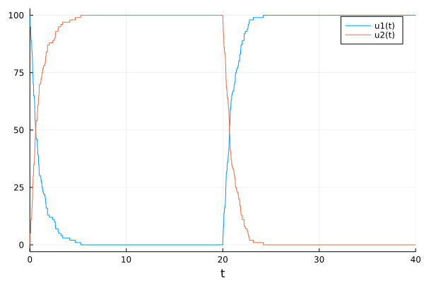

FAQ
My simulation is really slow and/or using a lot of memory, what can I do?
Exact methods simulate every jump, and by default save the state before and after each jump. To reduce memory use, use save_positions = (false, false) in the JumpProblem constructor as described earlier to turn off saving the system state before and after every jump. Combined with use of saveat in the call to solve, to specify the specific times at which to save the state, this can dramatically reduce memory usage.
While Direct is often fastest for systems with 10 or less ConstantRateJumps and/or MassActionJumps, if your system has many jumps or one jump occurs most frequently, other stochastic simulation algorithms may be faster. See Jump Aggregators for Exact Simulation and the subsequent sections there for guidance on choosing different SSAs (called aggregators in JumpProcesses). For systems with bounded VariableRateJumps using Coevolve with SSAStepper instead of an ODE/SDE time stepper can give a significant performance boost.
When running many consecutive simulations, for example within an EnsembleProblem or loop, how can I update JumpProblems?
In Remaking JumpProblems we show how to modify parameters, the initial condition, and other components of a generated JumpProblem. This can be useful when trying to call solve many times while avoiding reallocations of the internal aggregators for each new parameter value or initial condition. Remade problems share the original's jump state, so they can be solved one after another but not concurrently. The ensembles and problem reuse tutorial shows how to combine remake with EnsembleProblems safely.
Can I solve the same JumpProblem from multiple threads or tasks?
Not directly. Solvers owned by JumpProcesses reuse a JumpProblem's jump aggregator and callbacks rather than copying them, so one problem supports one active solve or integrator at a time. For concurrent solves, give each task its own deepcopy of the problem, made once per task and reused for that task's solves, or use an EnsembleProblem, which makes these copies for you. Problems created with remake share the original's jump state and are not independent. See Jump state ownership and problem reuse and the ensembles and problem reuse tutorial.
How can I define collections of many different jumps and pass them to JumpProblem?
We can use JumpSets to collect jumps together, and then pass them into JumpProblems directly. For example, using a MassActionJump and ConstantRateJump defined in the second tutorial, we can write
jset = JumpSet(mass_act_jump, birth_jump)
jump_prob = JumpProblem(prob, Direct(), jset)
sol = solve(jump_prob, SSAStepper())If you have many jumps in tuples or vectors, it is easiest to use the keyword argument-based constructor:
cj1 = ConstantRateJump(rate1, affect1!)
cj2 = ConstantRateJump(rate2, affect2!)
cjvec = [cj1, cj2]
vj1 = VariableRateJump(rate3, affect3!)
vj2 = VariableRateJump(rate4, affect4!)
vjtuple = (vj1, vj2)
jset = JumpSet(; constant_jumps = cjvec, variable_jumps = vjtuple,
massaction_jumps = mass_act_jump)How can I set the random number generator used in the jump process sampling algorithms (SSAs)?
Random number generators can be passed to solve or init via the rng keyword argument. Continuing the previous example:
using Random
jprob = JumpProblem(dprob, Direct(), maj)
sol = solve(jprob, SSAStepper(); rng = Xoshiro(1234))Any AbstractRNG can be used. For example, to use a generator from StableRNGs.jl:
using StableRNGs
sol = solve(jprob, SSAStepper(); rng = StableRNG(1234))A seed keyword argument is also supported as a shorthand for creating a Xoshiro generator: solve(jprob, SSAStepper(); seed = 1234).
By default, SSAStepper, the OrdinaryDiffEq ODE/DAE pathway, and all five CPU tau-leaping solvers use Julia's built-in Random.default_rng(). SDE/RODE solvers follow StochasticDiffEq's RNG/seed policy, and GPU kernel ensembles have backend-specific controls; see Random Number Generator Control.
What are these aggregators and aggregations in JumpProcesses?
JumpProcesses provides a variety of methods for sampling the time the next ConstantRateJump, MassActionJump, or VariableRateJump occurs, and which jump type happens at that time. These methods are examples of stochastic simulation algorithms (SSAs), also known as Gillespie methods, Doob's method, or Kinetic Monte Carlo methods. These are all names for jump (or point) processes simulation methods used across the biology, chemistry, engineering, mathematics, and physics literature. In the JumpProcesses terminology, we call such methods "aggregators", and the cache structures that hold their basic data "aggregations". See Jump Aggregators for Exact Simulation for a list of the available SSA aggregators.
How should jumps be ordered in dependency graphs?
Internally, JumpProcesses SSAs (aggregators) order all MassActionJumps first, then all ConstantRateJumps and/or VariableRateJumps. i.e., in the example
using JumpProcesses
rs = [[1 => 1], [2 => 1]]
ns = [[1 => -1, 2 => 1], [1 => 1, 2 => -1]]
p = [1.0, 0.0]
maj = MassActionJump(rs, ns; param_idxs = [1, 2])
rate1(u, p, t) = u[1]
function affect1!(integrator)
u[1] -= 1
end
cj1 = ConstantRateJump(rate1, affect1)
rate2(u, p, t) = u[2]
function affect2!(integrator)
u[2] -= 1
end
cj2 = ConstantRateJump(rate2, affect2)
jset = JumpSet(; constant_jumps = [cj1, cj2], massaction_jump = maj)The four jumps would be ordered by the first jump in maj, the second jump in maj, cj1, and finally cj2. Any user-generated dependency graphs should then follow this ordering when assigning an integer id to each jump.
See also Jump Aggregators Requiring Dependency Graphs for more on dependency graphs needed for the various SSAs.
How do I use callbacks with jump simulations?
Callbacks can be used with ConstantRateJumps, MassActionJumps, and VariableRateJumps. When solving a pure jump system with SSAStepper, only discrete callbacks can be used (otherwise a different time stepper is needed). When using an ODE or SDE time stepper, any callback should work.
Pass callbacks to solve or init, as in the example below, or to the JumpProblem constructor with its callback keyword.
Do not store callbacks on the problem a JumpProblem wraps, such as the DiscreteProblem or ODEProblem passed to JumpProblem. The JumpProblem constructor raises an ArgumentError if that problem stores a callback; see Defining a JumpProblem.
Note, when modifying u or p within a callback, you must call reset_aggregated_jumps! after making updates. This ensures that the underlying jump simulation algorithms know to reinitialize their internal data structures. Omitting this call will lead to incorrect behavior!
The reset refreshes parameter-mapped mass-action working rates from the current parameters. The former update_jump_params keyword is no longer accepted; no flag is needed. Fixed coefficients remain fixed. See the 10.0 migration guide for mapper and constructor changes.
A simple example that uses a MassActionJump and changes the parameters at a specified time in the simulation using a DiscreteCallback is
using JumpProcesses
rs = [[1 => 1], [2 => 1]]
ns = [[1 => -1, 2 => 1], [1 => 1, 2 => -1]]
p = [1.0, 0.0]
maj = MassActionJump(rs, ns; param_idxs = [1, 2])
u₀ = [100, 0]
tspan = (0.0, 40.0)
dprob = DiscreteProblem(u₀, tspan, p)
jprob = JumpProblem(dprob, Direct(), maj)
pcondit(u, t, integrator) = t == 20.0
function paffect!(integrator)
integrator.p[1] = 0.0
integrator.p[2] = 1.0
reset_aggregated_jumps!(integrator)
nothing
end
sol = solve(jprob, SSAStepper(), tstops = [20.0],
callback = DiscreteCallback(pcondit, paffect!))Here at time 20.0 we turn off production of u[2] while activating production of u[1], giving

How can I access earlier solution values in callbacks?
When using an ODE or SDE time-stepper that conforms to the integrator interface, one can simply use integrator.uprev. The pure jump SSAStepper provides the same field when the problem is solved with SSAStepper(; save_uprev = true): integrator.uprev then holds the state at the start of the current step, at time integrator.tprev, and the integrator can be evaluated anywhere in [integrator.tprev, integrator.t]. For example, to remove one unit of u[4] whenever u[2] decreases:
condition(u, t, integrator) = u[2] < integrator.uprev[2]
function affect!(integrator)
integrator.u[4] -= 1
reset_aggregated_jumps!(integrator)
nothing
end
sol = solve(jprob, SSAStepper(; save_uprev = true);
callback = DiscreteCallback(condition, affect!))The option also enables get_tmp_cache, which callbacks that evaluate the integrator in place need, such as a SavingCallback or FunctionCallingCallback with save times for a vector state. Keeping uprev copies the state on every step, so SSAStepper() does not; see Saving with callbacks and evaluating the integrator for the trade-offs, and for the alternative of passing the save times as tstops, which needs neither.
If only a few components are needed, storing them in the callback avoids copying the whole state on every step. For example, a functor can record the previous value of u[2]:
# stores the previous value of u[2] and represents the callback functions
mutable struct UprevCondition{T}
u2::T
end
# condition
function (upc::UprevCondition)(u, t, integrator)
# condition for the callback is that the new value of u[2]
# is smaller than the previous value
condit = u[2] - upc.u2 < 0
# save the new value as the previous value
upc.u2 = u[2]
condit
end
# affect!
function (upc::UprevCondition)(integrator)
integrator.u[4] -= 1
reset_aggregated_jumps!(integrator)
nothing
end
upc = UprevCondition(u0[2])
cb = DiscreteCallback(upc, upc)Which state types can I use with SSAStepper?
SSAStepper fully supports a Vector or an SVector of integers or floats, and, for spatial problems, a species × sites Matrix{Int}, which NSM and DirectCRDirect keep and other aggregators flatten into a Vector. Models without MassActionJumps can also use an integer or float scalar state, with every non-spatial aggregator except RSSA and RSSACR. Bounded VariableRateJumps require Coevolve. Other state types, such as nested arrays, are not supported, even when a model built from user-written jumps appears to work. See Supported state types for details.